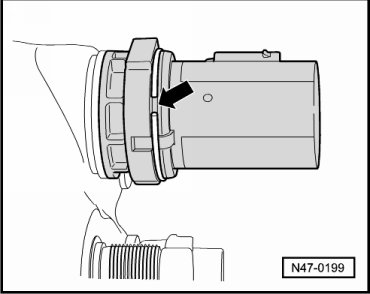

Vacuum Brake Booster Diaphragm Position Sensor: Service and Repair
Brake Booster Membrane Position Sensor
Removing
- Remove plenum chamber cover.
- Remove E-box from left plenum chamber from retainer and lay as far as possible aside.
- Disconnect connector from brake booster membrane position sensor.
- Pry circlip out of groove - arrow - and remove brake booster membrane position sensor from brake booster.

Installing
Installation is performed in the reverse order of removal.